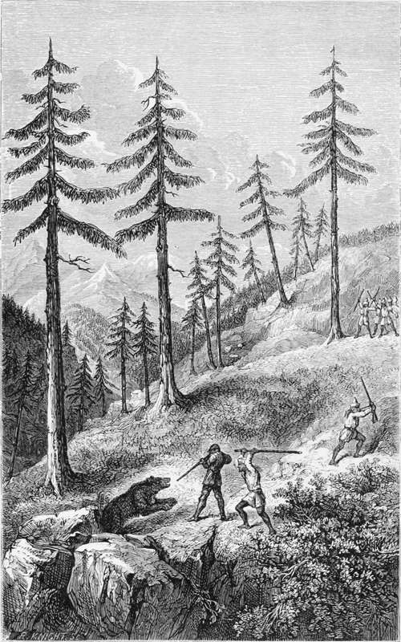

Chapter V. Part 4
Description
This section is from the book "Hog Hunting In The East, And Other Sports", by J. T. Newall. Also available from Amazon: Hog Hunting in the East, and Other Sports.
Chapter V. Part 4
" The order for the march was in consequence delayed, and I sallied forth with my well-tried old double gun and single rifle and a borrowed double rifle I also had with me. About a mile from the village was a little glen, opening on to the ravine whose stream lower down joined that forming the mountain gorge, up which my route lay. The glen was covered with long grass and masses of rock, while numerous pines and here and there patches of brushwood adorned its recesses. At the distance of a day's journey from the next village I was obliged, of course, to be content with the male population of that near which I was pitched as beaters, and these were but few. However, I took my station near the opening of the little glen, and they beat down towards me.
" Not a thing so large as a bear could have escaped without being seen somewhere, though the grass and weeds were very high, and I was beginning to think it was the same disappointing story over again, for the men had come even with the place where I was stationed, when a cry from a single man on the other side of the glen, but lower down, attracted my attention.
" On going to him I found that he had hit on the trail of the bear through the long grass. In most shikaring countries this would have been looked for in the first instance, for it was so broad and palpable as to be discoverable blindfold. It was evidently a path in frequent use, and we traced it up to a mass of overturned rocks, which formed a prominent object in the middle of the glen. I now got a little higher up than this, and stood prepared to blaze into anything breaking, while the men collected near me and howled and threw stones down on to the rocks, but without effect. I had myself seen the trail, and thinking some of the pugs which led to the spot were fresh, believed the beast was probably well-hidden in some cave, secure from the stones. Fireworks I had none ; so how to get Bruin out was the question. At last one man went down to the rocks, protected by me, and endeavoured to ascertain the nature of the stronghold.
" He found that there was an opening into the interior, which was evidently the usual mode of ingress and egress of its occupant, and he averred that he had seen the black body of the bear itself inside. This entrance was below, between two rocks. Above was another opening, but not so large, and we decided that if I went to this and blazed into it at the bear, of course, if visible he would bolt by the other, which I commanded from above at the distance of a few yards. Accordingly, with my old double smoothbore the best for such close quarters in hand, and accompanied in the rear by the spare-gun-bearers and the little head-man, I descended to the place. Stepping on to a flat rock, I peered down into the dark aperture. There was the bear unmistakably curled up, and quite heedless, in his entrenched position, of the hubbub outside. I could make out a portion of his black fur even in the shade of his retreat; but whether it was his head or his tail which was nearest to me and visible, I could not determine. However, I aimed at the dark mass within from the distance of a few feet, and blazed my right barrel into it,—
' And such, a yell was there,
Of sudden and portentous birth, As if men fought beneath the earth And fiends in upper air.'
" Excuse the quotation, but I put it down in my journal as appropriate. In fact, the row which fol-lowed my shot was fearful. 'Gad! the whole place seemed convulsed with sound, and had the rocks split asunder I don't think I should have been very much astonished; but there was precious little time for consideration. I stepped back to be prepared, my gucldees yelling for me to come away, as they bolted up the glen. The little head-man stuck to me, though he, too, pulled at my coat to retreat. Such, however, was quite out of the question. It was not the first time I had faced an angry bear at close quarters, though not so close as on this occasion, and I knew cutting for it was useless, even had I desired to skedaddle.
At Close Quarters With Bruin.
" Before the smoke cleared, a whopping bear scrambled out of the upper aperture, instead of by his usual mode of exit, as I anticipated, and came at* me, open-mouthed, and growling fearfully. He was almost at the end of my gun as I fired my left barrel into him ; indeed, so close, that my plucky little sole-remaining companion hit him over the head with his mountain staff. I thought I felt his breath, but that may have been my imagination. It was, of course, impossible for a man keeping his head to miss at such close quarters, and my bullet happily took instant and fatal effect. The bear, on receiving it, fell back on to the rock, his gruntings being exchanged for groans.
" I now sprang back and got hold of another gun, with which I treated the beast to a third pill as a quietus, though my previous one had effectually done for him. Had it not proved immediately mortal, I should certainly have come to grief.
" My men now joined us, and the guddee, shikaree and guide, embraced me in a transport of excitement, half crying and half laughing at the imminence of the danger, and its abrupt termination, for the whole affair did not occupy thirty seconds. We found that my first bullet had struck the bear about the ribs, and my second had entered the chest, generally a deadly wound with bears. There was much rejoicing in the little mountain village as the bear, a very large and handsome male, was brought in, and the pretty mountain damsels, some of whose cheeks were fair enough to show the red, and to whom such sport, as well as Europeans, was a novelty, sang paeans of triumph. There is a Himalayan experience for you."
Thanks were given, and several wished that the Himalayan range were on their side of India ; for even Bombay " esprit de Presidency " could not exalt the Ghauts wild, rugged, and picturesque though they be —into any comparison with the highest, and, probably, altogether the most beautiful mountain range in the world.
Continue to: